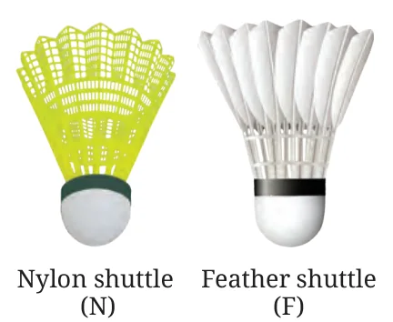
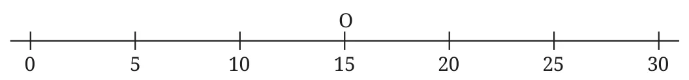
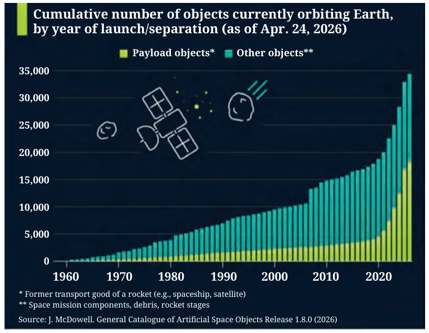
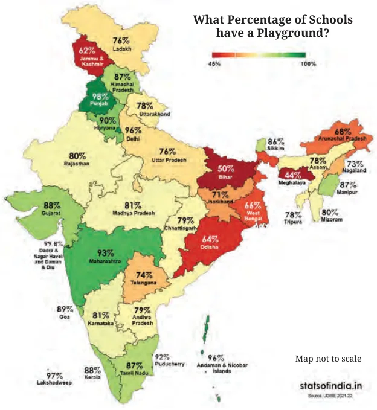
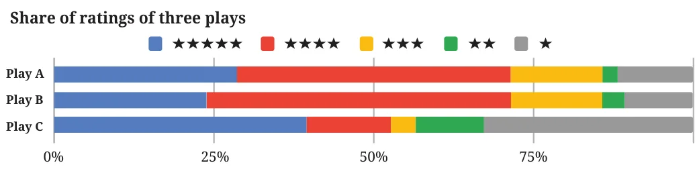
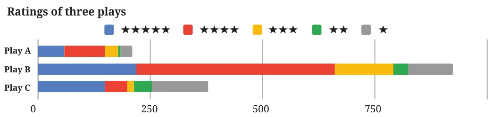
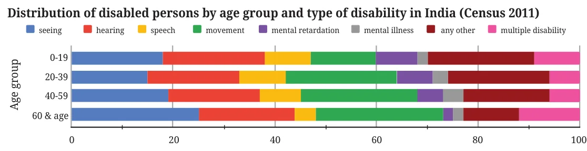

- In cricket, the run rate is the average number of runs scored per over. In a T20 match, a team scored 6 runs in the first over making the run rate 6.
- In the second over they scored 12 runs. What is the run rate now?
- After Over 19, their run rate was 6. What is the run rate after 20 overs given the team made 12 runs in the last over?
- Five friends who play badminton surveyed the city and collected the price of shuttlecocks across brands and types (Nylon and Feather). The following is the list of the prices, in rupees (₹), that each one compiled.

Yusuf: 40(N), 105(N), 383(F), 108(N), 165(F), 116(F)
Srikanth: 194(N), 85(N), 93(N), 121(N)
Kashvi: 49(N), 297(F), 105(N), 275(F), 40(N)
Prasanna: 124(N), 333(F), 182(N), 258(F)
Gracy: 220(F), 458(F), 129(F), 183(N)Can you describe a way they can work together to find the average price of a shuttlecock across types?
- Each one calculated the average of the prices they had gathered. Suppose these are \(a_{y}, a_{s}, a_{k}, a_{p}, a_{g}\) respectively. Write an expression that gives the combined average.
- Suppose \(a_{n}, a_{f}\) are the average prices of the nylon shuttlecocks and the feather shuttlecocks, respectively. Write an expression that gives the average price of a shuttlecock. Will this be equal to the answer we got using the method in the previous part?
- Shreyas holds 25 shares of a company at an average price of ₹150 and Vaishnavi holds 5 shares of the same company at an average price of ₹150.
- Shreyas buys 10 shares of this company at a price of ₹30 each. What is the average price per share for him after the purchase?
- Vaishnavi buys some shares of this company at a price of ₹30 each and the average price per share for her after the purchase is ₹70. How many shares did she buy?
- (Pṛthūdakasvāmī, commentary on Brahmagupta's Brāhmasphuṭasiddhānta, c. 864 CE) A “hasta” (meaning "forearm") refers to a unit of length measuring around 18 inches.
A pool 30 hastas long is dug to different depths along its length. It is divided into 5 sections having lengths 4, 5, 6, 7, and 8 hastas, and is dug to depths of 9, 7, 7, 3, and 2 hastas, respectively. Find the mean depth of the pool.
- Suvarna had purchased 1g gold at ₹15k (short for ₹15,000). This is shown by point O denoting the average price of gold that she possesses. Six different scenarios are given below for her next transaction. For each scenario estimate and mark the average price of gold she will have after the transaction.

- Purchase 1g gold at ₹30k
- Purchase 2g gold at ₹30k
- Purchase 1g gold at ₹10k
- Purchase 10g gold at ₹10k
- Purchase 0.5g gold at ₹30k
- Purchase 0.5g gold at ₹15k
- Given some data with corresponding weights, how would the weighted average change if all the weights are doubled? If required, experiment with some data. What do you observe? Justify your answer using algebra.
- Answer the following questions based on the graph.
- In 2003, approximately how many total objects were found orbiting Earth in space? In what year did this number double?
- Find the approximate number and share of payload objects and other objects in the year 2025.
- What can you say about the number of payload objects over time, and the number of other objects over time? What can you say about the share of payload objects over time, and the share of other objects over time?

- Observe the following infographic.

- Identify the correct inference(s) from the statements given.
- More schools have a playground in Haryana compared to Uttarakhand.
- Approximately every 2 out of 3 schools in Arunachal Pradesh have a playground.
- Punjab has the highest number of schools with a playground.
- Suppose it is given that Maharashtra has more schools than Telangana. Then the number of schools having a playground is more in Maharashtra.
- Using the information given, can we find the nation-wide percentage of schools with a playground? If not, what additional information is needed?
- Identify the correct inference(s) from the statements given.
- Decision Dilemma:
- Which of the plays would you choose to watch based on the following chart?

- The corresponding stacked bar chart is shown below. Would you change your decision after looking at this chart? Why/Why not? Discuss.

- Which of the plays would you choose to watch based on the following chart?
- A triathlon is an endurance race consisting of swimming 3.8 km, cycling 180 km, and running 42.2 km. Athletes compete for the fastest overall time, completing each segment in that order. The following table shows the finish time of 3 athletes in each segment.
Table 10.4: Finish time of three athletes in each segment of a triathlon race (values in hh : mm) Swimming Cycling Running Athlete 1 01:08 05:00 03:15 Athlete 2 01:05 05:10 03:35 Athlete 3 01:22 05:55 03:50 - What is a suitable representation of this data — a stacked bar chart or a 100% stacked bar chart? Why do you think so?
- Suppose a 100% stacked bar chart is drawn. Which of the following question(s) can be answered by looking at just that chart?
- Who finished the race first?
- Approximately what fraction of their race time did Athlete 1 spend cycling?
- Which athlete took the longest for running?
- Look at the following graph. What do you notice? What do you wonder? Write your inferences.

- Individual project: Do at least one of the following.
- Recall the previous day and fill in the approximate time spent lying down, sitting, and standing/moving around, etc. Ask at least 2 of your family members about their day and fill it in. Alternatively, you can choose to track just your own body-state for any one of the weekdays, Saturday, and Sunday. Visualise it using a stacked bar chart. Discuss with your class how you arrived at the estimated time spent in each state.
- Visualise your family’s monthly expenditure using a 100% stacked bar chart.
- First, identify the expense categories in your family budget.
- Discuss with your family members to decide how you will collect and organise the data.
- Collect expense data for at least 3 months.
- Represent the data in a 100% stacked bar chart, with each bar showing how the total monthly expenditure is divided across the different categories.
- Finally, write your observations and inferences based on the chart.
- Small-group project: Make a group of 3–4 students. Choose one scenario to design a custom rating scheme by assigning appropriate weights: (a) shopping experience at a cloth store, (b) travel experience in a bus, (c) tourism experience of a nearby tourist spot, (d) clinic/hospital experience
- Discuss and arrive at 4–6 aspects to rate. For each aspect chosen, justify why it matters for an overall experience.
- Discuss and decide the relative weights and justify.
- Collect or imagine ratings from at least 10 people on a scale of 1–5 (5 being very good).
- Compute each individual rating. Compute the overall average across individuals.
- Make a 100% stacked bar chart using your data.
- Write a short note on the observations and inferences, what your rating system captures well and what it misses.
- Whole class project: Each student shares the average age of their family and the number of family members. Discuss among the class and come up with a way to find out the average age of all the families of the class.
- (*) Given some data with corresponding weights, what would happen to the weighted average if all the weights are increased by a constant value, say 1? If required, experiment with some data. What do you observe? Justify your answer using algebra.
- (*) A farm has some cows, sheep, and chickens. Last year the cows made up 60%, the sheep 25%, and the chickens 15%. There was a decrease in the number of all three animals’ population over the year. Choose the possibilities for the change in their respective shares of the population —
- % of cows decreased, % of sheep decreased, % of chickens decreased
- % of cows increased, % of sheep increased, % of chickens increased
- % of cows remained the same, % of sheep remained the same, % of chickens remained the same
- % of cows decreased, % of sheep increased, % of chickens remained the same
- % of cows increased, % of sheep increased, % of chickens decreased.
Chapter 10 · How Quantities Combine Understanding Data